Curvature that is not quadratic
Our previous analysis of linearity in the normal linear model
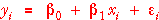
involved comparing the fit of the model to that of a quadratic model,
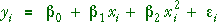
The only problem with this approach is the assumption that any curvature must be quadratic. If the curvature in the model is of a different form, the test is usually conservative and is therefore less likely to detect the curvature.
Data sets with several response measurements at some x-values
Another approach is possible if there are multiple response measurements for each x-value. This type of data set usually arises from experiments in which only a few x-values have been used by the experimenter, but it may also be obtained from observational studies if the explanatory variable is discrete (counts).
Lettuce and nitrogen fertiliser
An experiment was conducted to test the effects of nitrogen fertiliser on lettuce production. Five rates of ammonium nitrate were used in a completely randomised design with four replicates (plots). The data are the number of heads of lettuce harvested from each plot.
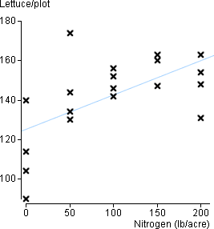
In this data set there were four response measurements at each x-value.
A different approach to testing for linearity
An alternative model that does not constrain the shape of the curvature simply states that the response at each x-value has a different mean. This is equivalent to treating each of the g distinct x-values as a separate factor level or group and using the normal model for g groups.
To express this model mathematically, we need two subscripts for the values. Writing the j'th of the repeat measurements at the i'th value of the explanatory variable, xi, as yij, the model is:
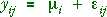
This again is a generalisation of the linear model. The linear model constrains the g 'group means' to lie on a straight line.We therefore again have a sequance of three potential models of increasing complexity, each of which can be fitted to the data by least squares and provides fitted values.
| Model | Fitted values (predicted response) | |
|---|---|---|
| Constant | 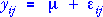 | 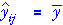 |
| Linear model | 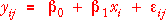 | 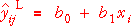 |
| Factor model | 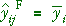 |
Components
Using this sequence of models, we can identify how the successive models improve the fit. (We omit the double subscripts from now on to simplify the notation.)
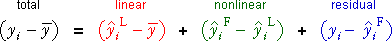
Sums of squares
The sums of squares of these three components obey a similar relationship when the models are fitted by least squares:
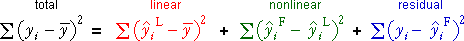
The diagram below helps to interpret the three components (and their sums of squares).
Lettuce and nitrogen fertiliser
The scatterplot below shows the relationship between the number of heads of lettuce harvested and nitogen applied. The overall mean (grey), the least squares line (light blue) and group means (pink) are also shown on the diagram.
Click the cross corresponding to the lowest yield at the bottom left of the scatterplot. Observe how the three components add to the total component. (The same relationship holds for the other crosses, but most involve a mixture of positive and negative components so the visual effect is weaker.)
Use the pop-up menu to display the linear, quadratic and residual components for all data values together on the scatterplot.